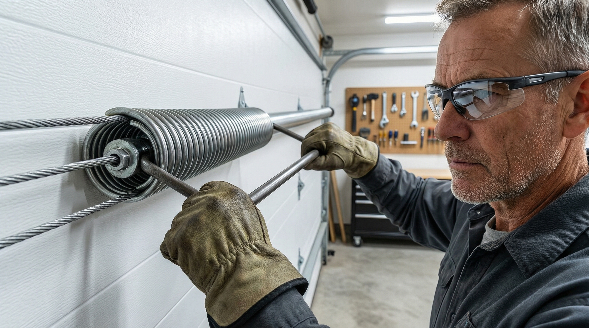
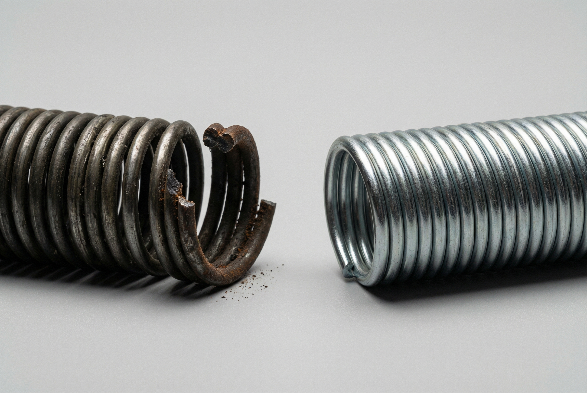
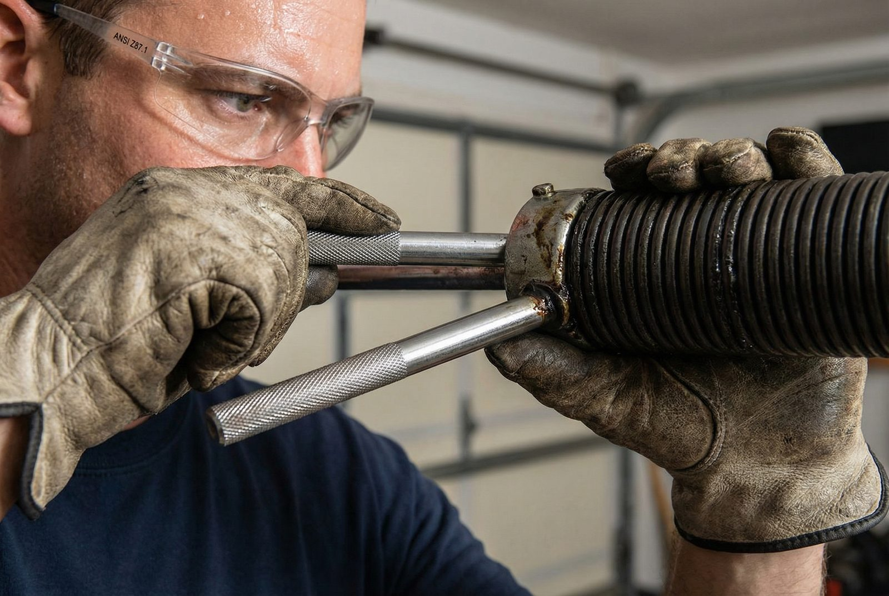
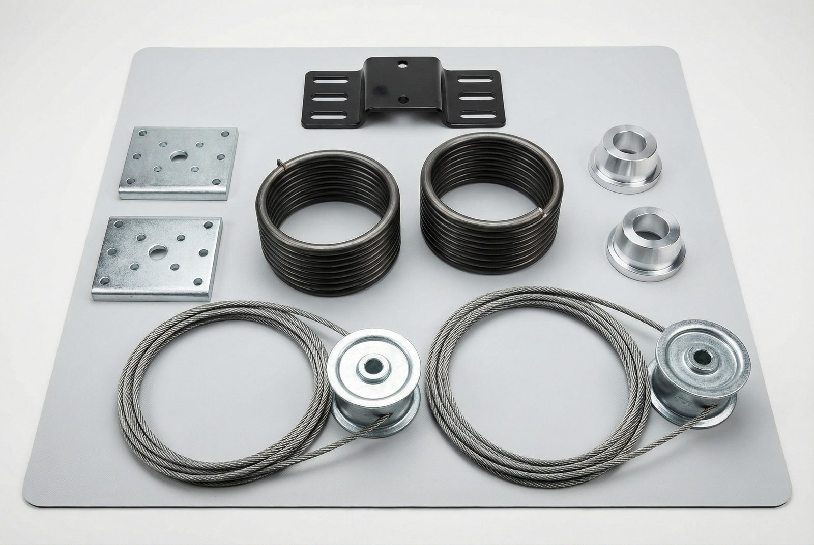

Brands We Service
Garage door springs are the workhorses of your entire door system. They do the heavy lifting — literally — absorbing and releasing hundreds of pounds of force every single time you open or close your door. When a spring breaks, everything stops. The door feels impossibly heavy, the opener strains or stalls, and in many cases the door won't budge at all. At Gilbert Garage Door Pro, spring repair is one of our most common service calls, and we've refined every part of the process to get your door working again as quickly and safely as possible.
If you heard a loud bang from your garage — often described as a gunshot — that's the unmistakable sound of a torsion spring snapping under load. It's startling, it's disruptive, and it needs to be addressed by a professional right away. Call us at (480) 555-0199 and we'll dispatch a technician to your Gilbert home the same day.


Not all garage door springs are the same, and identifying which type you have is the first step toward understanding the repair. There are two main types used in residential garages: torsion springs and extension springs.
Torsion springs are mounted horizontally above the center of the garage door, coiled around a solid steel shaft that runs across the full width of the opening. When you close the door, the spring winds up and stores mechanical energy as torque. When you open the door, that stored torque unwinds and does the work of lifting the door. Because the energy is stored and released through rotation along a central shaft, the system is extremely controlled and precise.
Torsion springs are the standard in modern homes — virtually every garage door installed in Gilbert over the past two decades uses this configuration. They're more durable, last longer, and fail more safely than their extension counterparts. A broken torsion spring typically snaps in place on the shaft rather than flying across the garage.
Extension springs run along the horizontal tracks on either side of the door, parallel to the ceiling. Rather than storing energy through rotation, they stretch — extending as the door closes and contracting to pull the door open. You'll recognize them by their long, coiled shape flanking the tracks on both sides of the garage.
Extension springs are more common in older homes and in garages with low ceilings where there isn't room above the door for a torsion assembly. They're effective but have a notable limitation: when they break, the released energy can send the spring flying with considerable force. That's why properly installed extension springs always have a safety cable threaded through the coil. If the spring snaps, the cable contains it. If your extension springs don't have safety cables, that's a hazard worth correcting immediately.
Our technicians are experienced with both systems. Whatever you have, we'll diagnose it accurately and replace it with the correct spring type and specification for your door.
Spring failure rarely happens without warning. Most springs give off clear signals in the days or weeks before they break completely. Catching these early can save you from a sudden failure that leaves your car trapped or your garage unsecured.
The most dramatic sign: a sudden, sharp bang from the garage, often while the door is in motion or sitting closed. This is a torsion spring snapping under tension. The sound carries through the house and is sometimes mistaken for a car crash or something falling. If you hear this and your door suddenly won't open, a broken spring is almost certainly the cause.
Springs counterbalance the weight of the door. A standard two-car garage door weighs between 130 and 200 pounds. When the spring fails, that full weight falls on the opener — or on you if you try to lift it manually. A door that suddenly requires significant effort to open, or won't open at all, is a red flag that your spring has failed or is at the point of failure.
A healthy torsion spring has tightly wound coils with no gaps. When a spring breaks, the coils separate at the break point, leaving a visible gap — often a 1–3 inch separation in the middle of the spring. If you can safely see the spring above your door and notice this gap, the spring has already broken and the door should not be used until it's repaired.
Many garage doors use two springs for balanced lifting. If one spring breaks and the other remains intact, the door will lift unevenly — rising on one side and lagging on the other. This creates a visible tilt as the door moves, and over time it puts enormous strain on the opener, cables, and tracks. An uneven door almost always points to a single broken spring on a two-spring system.
The lift cables on your door connect the bottom bracket to the spring drum. When a spring breaks, the cables lose tension and can slip off the drum or hang loosely along the sides of the door. Loose cables are both a symptom of spring failure and a secondary hazard — a cable under sudden tension can snap or whip if the door is moved. Leave the door alone and call a professional.
Your opener is designed to work with springs that bear most of the load. If the springs are weakening but haven't broken yet, the opener will work noticeably harder. You might notice it moving slower than usual, making more noise, or straining particularly during the initial lift. This is often the earliest warning that your springs are nearing the end of their service life.
Garage door spring repair is the single most dangerous DIY home repair a homeowner can attempt. This is not an exaggeration, and it is not legal boilerplate. It is a statement backed by injury statistics and the physics of what these springs do.
A standard torsion spring on a residential garage door stores over 100 foot-pounds of torque when fully wound. That's enough energy to cause catastrophic injury if the spring is mishandled, improperly wound, or releases suddenly during repair. The U.S. Consumer Product Safety Commission (CPSC) documents thousands of garage door-related injuries annually, with spring failures among the leading causes of serious harm.
Proper spring replacement requires specialized winding bars — solid steel rods that fit into the winding cone and allow the spring to be safely tensioned or de-tensioned. Using a substitute (a screwdriver, a pipe, anything else) is extremely dangerous. The bar can slip under load and become a projectile. Even with the right tools, the technique requires training and experience to execute safely.
The Door & Access Systems Manufacturers Association (DASMA) explicitly recommends that consumers never attempt to adjust, repair, or replace garage door springs themselves. Our technicians have performed hundreds of spring replacements and know exactly how to manage the tension safely. The cost of a professional repair is a fraction of what emergency medical care would cost — and some injuries from spring failures are irreversible.
Please call us at (480) 555-0199 instead of attempting this repair yourself. Spring replacement is also the #1 cause of garage door emergencies — we're available 24/7 for exactly this reason.
Spring manufacturers rate their products in cycles. One cycle equals one complete open-and-close of the garage door. A standard residential torsion spring is typically rated for 10,000 cycles. For a household that opens and closes the garage door four times a day — a conservative estimate for most Gilbert families — that works out to roughly 2,500 cycles per year, or about 4 years of life expectancy at that rate.
Most sources cite 7–10 years as the typical lifespan under average use. However, those figures assume average conditions, and Gilbert is anything but average. The Phoenix metro area experiences some of the most extreme thermal cycling of any major metropolitan area in the United States. Summer high temperatures routinely exceed 115°F, and interior garage temperatures can climb to 130°F or higher when the door is closed and the sun is beating down on the structure.
Steel springs expand when heated and contract when cooled. In a mild climate, this daily thermal cycle is minimal. In Gilbert, the swings are dramatic — the same spring may experience a 60-degree temperature difference between a winter morning and a summer afternoon. This repeated expansion and contraction accelerates metal fatigue, causes the spring's temper to degrade faster, and can lead to stress fractures forming well before the spring reaches its rated cycle count.
In practical terms, Gilbert homeowners should expect their springs to fail earlier than the national average — sometimes significantly so. If you've lived in your home for 7 or more years and have never had the springs replaced, they warrant a close look from a professional, even if they're still functioning.
Gilbert's median home was built around 2001, making the average Gilbert garage door system approximately 25 years old as of today. Standard springs rated for 10,000 cycles have a design life of 7–10 years. Even if we assume your springs were high-quality units rated for 15,000 cycles, a 25-year-old spring has almost certainly well exceeded its intended service life.
Many homeowners inherit their home's original spring hardware without ever thinking about it. The door opens, the door closes, and nothing seems wrong — until the spring breaks at 6 AM on a Monday morning with your car trapped inside. If your Gilbert home was built between 1995 and 2008 and you've never had the springs inspected or replaced, the statistics are not in your favor. A proactive spring replacement is far less disruptive than an emergency call on a day you can't afford one. If your springs have failed and it's time to consider a full system upgrade, we also offer professional garage door installation with new spring hardware included.


Not all replacement springs are created equal. When we replace your springs, we give you a choice of spring grades based on your usage pattern and budget.
Standard springs meet the minimum requirement and are the most affordable option. For a light-use door in a single-vehicle garage or a secondary storage garage, a standard spring is a reasonable choice. That said, given Arizona's accelerated wear conditions, we typically recommend stepping up to a higher-cycle spring whenever possible.
High-cycle springs are manufactured with heavier-gauge wire, more precise tempering, and tighter tolerances than standard springs. A 25,000-cycle spring will last roughly two and a half times as long as a standard spring under the same usage pattern. For a busy family garage that sees 6–8 cycles per day, a high-cycle spring can mean the difference between replacing springs every 5 years and replacing them every 15.
The price difference between standard and high-cycle springs is typically modest — often $30–$75 per spring in parts cost. Given that labor is the majority of the job expense, upgrading to a longer-lasting spring while the technician is already on-site is almost always the better value. We carry high-cycle springs on every service truck and can upgrade your system the same day.
A garage door spring isn't a universal part. Each spring is engineered to precisely match the weight of the specific door it counterbalances. The spring's wire gauge, inside diameter, and length all combine to produce a specific torque output. Install a spring that's too weak and the opener carries more load than it's rated for, burning out motors and stripping gears prematurely. Install a spring that's too strong and the door can fly open uncontrolled, snapping cables and damaging the entire system.
Correct sizing requires knowing the door's exact weight, the height of the door, the cable drum specifications, and the desired number of turns. Our technicians measure and calculate all of this before selecting a replacement spring. We don't guess, and we don't use whatever happens to be on the truck that's "close enough." Every spring we install is spec'd for your exact door. This precision is why our repairs last and why our customers don't call us back with the same problem three months later.
If your door's opener is also showing signs of strain from working with a failing spring, our technician will assess it during the same visit and let you know if it's at risk of damage. Catching opener stress early can save you from a second repair down the road. See our spring repair pricing guide for detailed cost information and what's included in every service call.
When you call us with a broken spring, we treat it as an urgent repair. Most spring jobs are scheduled and completed the same day. We carry the most common spring sizes on every truck, so there's no waiting for parts to be ordered. You'll have a working door by the end of the day in the vast majority of cases.
While our technician has the door down for spring replacement, we inspect the rest of the system at no extra charge. We check cables for fraying, drums for wear, rollers for damage, and the opener for stress indicators. If we find anything worth addressing, we'll tell you about it and give you the option — no pressure, no upselling.
We provide a complete, itemized quote before any work begins. You'll know exactly what you're paying for springs, labor, and any additional parts. There are no surprise charges when the invoice arrives. Our pricing is transparent because we believe customers deserve to make informed decisions.
If your door uses two springs — which most do — we strongly recommend replacing both at the same time, even if only one has broken. The surviving spring is under the same age-related stress as the one that failed. Replacing only the broken spring typically means a second service call within months. Doing both at once is the smarter, more cost-effective approach.
After installing the new springs, we lubricate all moving parts — hinges, rollers, and the torsion shaft — and calibrate the opener's force settings to match the new spring tension. A properly calibrated opener runs quieter, lasts longer, and operates the door safely. This final step is included in every spring replacement we perform.
We stand behind our spring replacements. If anything related to our installation goes wrong after we leave, call us and we'll make it right. We use quality parts from reputable suppliers and install them correctly the first time. Our reputation in the Gilbert community depends on every job being done properly.
Gilbert Garage Door Pro provides spring repair throughout Gilbert and the wider East Valley. Whether you're in Power Ranch dealing with a snapped torsion spring or in Queen Creek with a pair of worn extension springs, our technicians are nearby and ready to respond the same day.

Torsion spring replacement typically costs $150–$350 including parts and labor. If both springs need replacing — which we recommend whenever one breaks — expect $200–$400 for the pair. Extension spring replacement is generally in a similar range. Prices are estimates — see our cost guide for details or call for a free on-site quote. We provide an exact quote before starting any work, so you'll know the full cost upfront with no surprises.
Most spring replacements are completed in 30–60 minutes. We carry the most common spring sizes on our trucks, so there's usually no waiting for parts to be shipped or sourced. If your door also has cable damage or other issues discovered during the inspection, total time may extend slightly, but the vast majority of spring jobs are done in a single, efficient visit.
No — we strongly advise against DIY spring repair under any circumstances. Garage door springs are under extreme tension and require specialized tools (winding bars) and hands-on training to handle safely. Serious injuries and deaths have occurred from amateur spring repairs. The U.S. Consumer Product Safety Commission and DASMA both advise consumers to hire qualified professionals for this work. The cost of professional repair is minimal compared to the medical costs and personal risk of a DIY attempt gone wrong.
Standard springs are rated for approximately 10,000 cycles — roughly 7–10 years under typical residential use. In Arizona, extreme heat accelerates metal fatigue, and Gilbert homeowners may see springs fail earlier than that national average. High-cycle springs rated for 25,000–50,000 cycles are available and provide significantly longer service life. We carry both options and can help you choose the right specification for your usage and budget.
Yes, absolutely. If one spring breaks, the other is subject to the same age-related fatigue and is likely within weeks or months of failing on its own. Replacing both during the same service visit saves you from a second service call, keeps your door operating in a balanced, symmetrical way, and gives you the peace of mind that both springs are new and matched. The incremental cost of adding a second spring while the technician is already on-site is much less than scheduling a separate job.
Same-day service available throughout Gilbert and the East Valley. Call us now at (480) 555-0199
Call (480) 555-0199